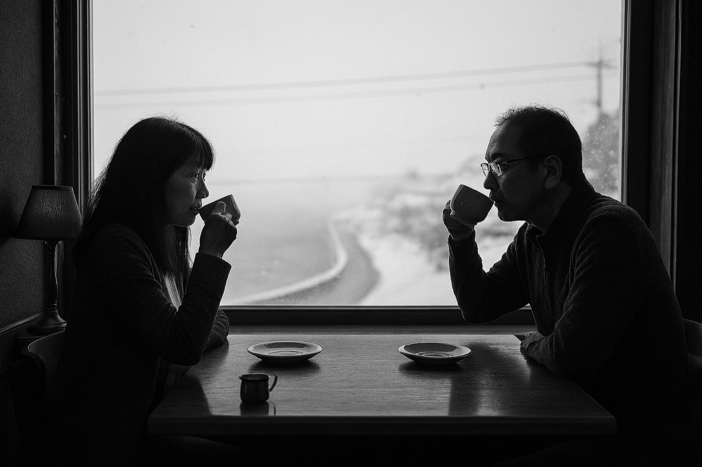

ぜんぶ選んだら、おにゃんどんの前に置く。
梶町よん『夕日の歌』より
三浦半島で、「僕」の毎日をすこしだけ。行きたい場所を選んでください。
鎌倉山の鯉の餌やりから、三崎の喫茶店の閉店まで

黄色いテントの喫茶店の、ある一日 朝：鎌倉山で鯉の餌やり今日のお客：漁師のおじさん／Ｙさんと Ｅさん／ご夫婦／それから、おにゃんどん
この一日は、小説『夕日の歌』の中の一日です。店をはじめた「僕」の、その先の話は本で。